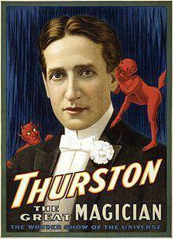
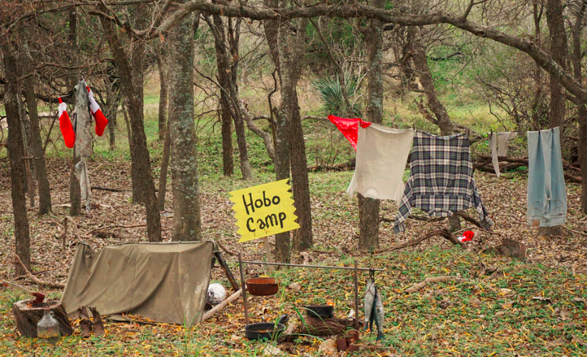

chapter4.2--handout
Background Information
Howard Thurston（霍华德·瑟斯顿）
来自美国俄亥俄州哥伦布市的一位舞台魔术师。Thurston在参加魔术师亚历山大赫尔曼（ Alexander Herrmann）的魔术表演后，被深深地打动，Thurston决心要和他一样成为了他那个时代最著名的魔术师，被称为The King of Cards

Oyster Bay & Roosevelt (牡蛎湾&罗斯福家族)
卡叔提到的Oyster Bay位于纽约州长岛（Long Island），属于New York metropolitan area的一部分。
西奥多·罗斯福 Theodore Roosevelt（美国历史上最年轻当选的总统）在此生活过一段时间。这里还有一座 Theodore Roosevelt Memorial Park纪念公园，和位于北达科他州的Theodore Roosevelt National Park 国家公园，都是为了纪念他而建。
顺便讲一下罗斯福家族的关系，Theodore Roosevelt是美国第26任总统，是第32任总统Franklin Roosevelt的远房堂兄。 Franklin Roosevelt 富兰克林·罗斯福就是我们熟悉的通过罗斯福新政搞定美国大萧条的总统，也是美国历史上唯一连任超过两届（连任四届，病逝于第四届任期中）、美国迄今为止在任时间最长的总统。
分享一句Franklin Roosevelt的话给大家：
“The only thing we have to fear is fear itself.”
我们唯一需要畏惧的是畏惧本身。
Johnson & Johnson
看英文品牌可能还会陌生，但是提起它的中文名：强生，可谓家喻户晓了吧~
J & J旗下拥有：强生婴儿、露得清、可伶可俐、邦迪、达克宁等众多知名品牌。这样大家就理解小drug store的老板对于巨头碾压式的营销为何那么反感啦～
Vocabulary
mystify
💧v. something is so strange or confusing that you cannot understand or explain it
动词：使困惑不解，使迷惑；难住
💧eg:The audience must have been totally mystified by the plot.
观众一定是让剧情完全搞晕了。
privileged
💧Adj. having a special advantage
形容词：有特权的；荣幸的，幸运的
💧eg: In the nineteenth century only a privileged few had the vote.
十九世纪只有少数特权人物才有选举权。
maid
💧n. a female servant
an unmarried girl女仆，少女
💧eg: He gave his maid $100 for a month's work.
他付给他的女仆一个月的报酬为100美元。
boom
💧v. to say something in a loud deep voice
动词：用洪亮而低沉的声音说
💧‘Ladies and gentlemen,’ his voice boomed out.
“女士们，先生们。”他的声音低沉而有力。
Crush Your Problems
- For forty years / he had traveled all over the world, / time and again, / creating illusions, mystifying audiences, and making people gasp with astonishment.
💧time and again，屡次，常常，就是rerepeatedly的意思啦，属于副词性成分，所以放在哪个地方都可以。
💧creating，mystifying，and ，making，这三个是parallel的内容，并列关系。
💧make somebody gasp，令人驻足屏息，比如文中making people gasp with astonishment，使人惊叹！下面看个例子：
make somebody gasp with admiration 太敬佩，叹服！ - First, he had the ability to put his personality across the footlights. He was a master showman. He knew human nature.
首先，他更接地气。他是杰出的表演人才，他懂得人情。
💧这个句子有两个知识点，第一是put his personality across the footlight，footlight，是舞台脚光，所以这个句子就是一个比喻，个性到了舞台底部，也就是接地气。
💧另一个知识点是nature, 就是指的人的性格/天性。
E.g：Jeya feels that her ambitious nature made her unsuitable for an arranged marriage.
耶雅觉得她的雄心勃勃的个性使她不适合包办婚姻。 - His schooling certainly had nothing to do with it, for he ran away from home as a small boy, became a hobo, rode in boxcars, slept in haystacks, begged his food from door to door, and learned to read by looking out of boxcars at signs along the railway.
💧这句话中，涉及到一个词组和一个文化背景：
hobo是流浪汉。在美国的大城市这种流浪汉现象尤为突出，在美国洛杉矶，旧金山，纽约和芝加哥这种大城市，每1000人口里面就有3-4个是无家可归的人。而在这些城市里面又有一半是真正的住无定所露宿街头的穷人。

而文章描述的这句话，也就是美国典型流浪汉的生活：他在幼年就离家出走，成了一个飘泊流浪者，偷乘火车，睡在草堆上过夜，挨家求乞。由车窗观看铁路两旁广告，让他认识了几个字。
💧nothing to do with 和...无关
E.g：These questions have nothing to do with party or ideology.
这些问题其实和党派和意识形态毫无关系。
下面在补充：与…无关的词组
have nothing to do with
have no concern with
have no relation to or connection with
have no business to (do)
be independent of - I left with my tail between my legs and drove around the town for several hours.
💧with one's tail between one's legs
形容夹着尾巴灰溜溜走掉的状态
（论中英文的异曲同工...）
Content Analysis
昨天的内容中，卡叔告诉我们人总是更关心自己而非他人，当你真正想获取真诚的友谊时，需要真诚的投入情感，今天的内容中，卡叔分享了更多的栗子：
在水平相近的十几位魔术师中，是什么使Howard Thurston脱颖而出？一个是因为他更接地气，富有表演人格，另一个是因为他对观众有浓厚的热爱。（Thurston had a genuine interest in people）与其他把观众当成傻子的魔术师相比，他更懂得感激和尊重台下的每一位观众；
当大多数人都认为到了一定年纪，生活已经不再有变化的时候，72岁的George Dyke仍旧保持着对他人的兴趣和好奇心，以谦逊友好的心态结交了许多小提琴高手，为自己创造了一种新的生活。
对人热情，关心他人也是罗斯福总统取得成功，受人爱戴的重要因素之一。在《西道尔·罗斯福：侍从心目中的英雄》（Theodore Roosevelt, Hero to His Valet）一书中，罗斯福的侍从爱莫士James E. Amos讲述了总统对他和他妻子关心友好的感人故事。罗斯福心系众人，会由身边的小事想到别人，也会对下人致以亲切的问候。这是他的人格魅力。
最后作者举例了强生销售代表的例子：小药店的老板担心强生公司这种巨头的碾压，因此拒绝了这位销售。一开始他也灰溜溜的走了，但是最后这位销售代表还是决定回去解释公司的立场。
Finally, I decided to go back and try at least to explain our position to the owner of the store.
正是出于这种真诚的关心和态度，他保住了小药店的订单。
The same concern for the seemingly unimportant people helped sales representative Edward M. Sykes, Jr., of Chatham, New Jersey, retain an account.
Today's Bonus
今天我们跟着卡叔认识了一位伟大的魔术师Howard Thurston，一直觉得会变一两个魔术简直棒呆了，下面就给大家分享几个压箱底儿的魔术小伎俩：
- Trick with Coin
- Instantaneous Freezing
- Instantaneous Freezing
- Instantaneous Freezing